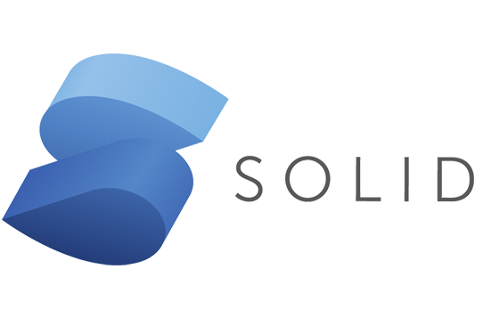
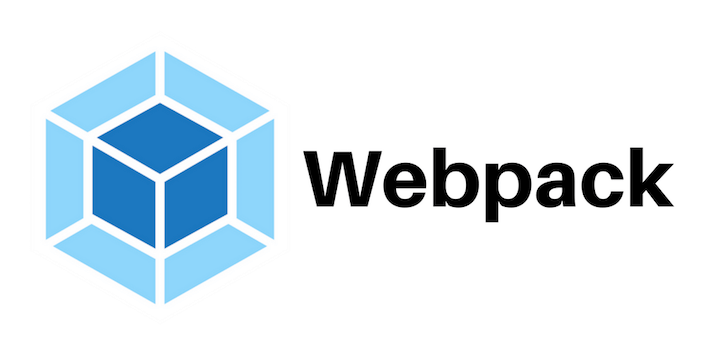

Introduction
Junior Frontend & UI/UX Designer from Bandung, Indonesia
Halo namaku Bima Pria Aditya seorang junior frontend developer yang kadang-kadang banting stir jadi UI/UX designer kalo lagi gabut hahah. Lihat jenjang karir yang pernah saya tempuh pada portofolio ini üòÅ
My StoryMy Story
Cerita hidupku dimulai saat pertamakali datang ke dunia ini pada 02 November 2001 tepatnya di kota Bandung. Menyukai Perangkat komputer sedari kecil dan sering keluar masuk warnet untuk sekedar main game seperti Point blank, Counter Strike, Friv, Lost Saga, dsb...
Karena kecintaan ku terhadap komputer saya memutuskan untuk melanjutkan pendidikan ke sekolah kejuruan SMK Negeri 2 Kota bandung pada 2017 dengan memilih jurusan Rekayasa Perangkat Lunak RPL, diawali dari kecintaan ku kepada game maka saya memutuskan ingin ikut terjun pada pembuatan suatu software aplikasi.
Tidak ada hal yang menarik di hidupku saat masa SMK, hidup normal seperti manusia umumnya belajar, bermain, ngoding, nge-game dan mengukuti organisasi. Mengikuti organisasi Palang Merah Remaja dan secara beruntung terpilih menjadi Komandan selama 1 tahun periode.
2020 Merupakan titik awal perjalanan karir ku, setelah lulus SMK saya memutuskan untuk mencari pekerjaan sebagai Web Software Developer, hingga akhirnya saya mendapatkan pekerjaan di suatu software house hingga saat ini di perusahaan bernama PT Ciheul Teknologi dengan jabatan sebagai Software Engineer yang spesifik menagani masalah tampilan aplikasi (Frontend) terkadang ikut dalam pembangunan design UI/UX untuk project aplikasi baru.
Meninjau peluang karir yang lebih besar saya memutuskan kembali duduk di bangku pendidikan menjadi seorang mahasiswa setelah gap year selama kurang lebih 2 tahun bekerja. Menagambil jurusan Informatika di STMIK AMIK Bandung Saat ini
4
Tahun PengalamanSoftware Engineer
2
Tahun PengalamanUI/UX Designer
12
FrontendProject
5
UI/UXProject
Educations
-
SMK Negeri 2 - RPL
2017 - 2020 (3 Year)-- no description --
-
Sanbercode Bootcamp - Laravel
Juli 2020 - Agst 2020 (1 Month)Online bootcamp dilakuakn selama 1 bulan penuh. Rank 25 dari 92 Peserta dengan akumulasi nilai akhir 71.00
-
Sanbercode Bootcamp - UI/UX
Jun 2021 - Jul 2021 (1 Month)Online bootcamp dilakuakn selama 1 bulan penuh. Rank 30 dari 112 Peserta dengan akumulasi nilai akhir 85.00
-
Sanbercode Bootcamp - Graphic Design
Jul 2022 - Agst 2022 (1 Month)Online bootcamp dilakuakn selama 1 bulan penuh. Rank 7 dari 15 Peserta dengan akumulasi nilai akhir 75.00
-
STMIK AMIK Bandung - Informatika
Sept 2022 - Now (+1 year)Mahasiswa semester 3 di Sekolah Tinggi Manajemen Informatika dan Komputer AMIK Bandung Jurusan Informatika
Work & Organization Experience
-
CV. Bentang Inspira Teknologi
Jan 2019 - Apr 2019 (3 Month)Magang PKL dari SMK Negeri 2 Selama 3 bulan. Diberikan tugas untuk membangung aplikasi tracking project internal Perusahaan
-
Organiassi PMR - Komandan
Juli 2017 - Agst 2020 (3 Year)Menjadi anggota aktif dan terpilih menjadi komandan (ketua) organisasi selama 1 tahun periode 2018/2019
-
PT Ciheul Teknologi - Frontend Software Engineer
Agst 2020 - Now (+3 Year)Karyawan di perusahaan software house dengan jabatan software Engineer yang berfokus pada penangan tampilan dan UI/UX aplikasi yang di develop bersama team
My Skill
-

-

-

-

- 
-

-

-

-

-

- 
-